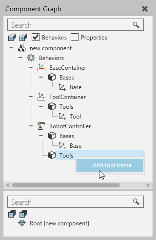
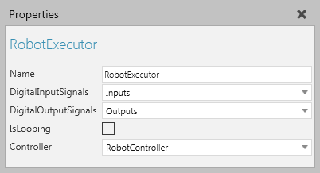
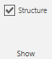
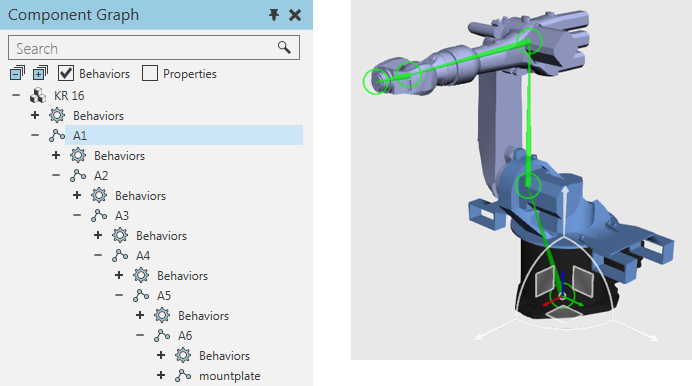
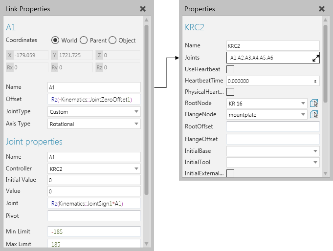
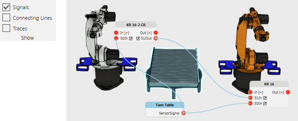
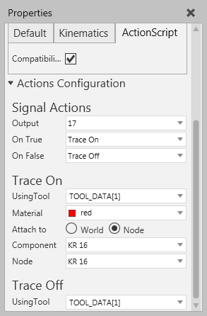

A robotics type behavior is used to teach and execute robot programs.
Contents Hide
| Name | Description |
| Base Container | Provides a logical container for adding and editing Frame features used as base frames, which act as a base coordinate system. |
| Robot Controller | Defines a robot and its configuration, for example its kinematics, joints, speed and acceleration. |
| Robot Executor | Provides a logical container and executor for a robot program. |
| Servo Controller | Defines a servo and its configuration, for example its joints, speed and acceleration. |
| Tool Container | Provides a logical container for adding and editing Frame features used as tool frames, which act as a tool center point (TCP). |
When working with base and tool frames, you need to use the Component Graph panel and shortcuts to edit the Bases and Tools elements of some robotics type behaviors. Generally, you do not need to use Base and Tool Containers in a component that has a Robot Controller since that behavior has its own base and tool frame collections.

When modeling a robot, you should use a Robot Controller and pair it with a Robot Executor in order to teach, edit and simulate the robot's program.

This does not remove the need to properly define the joints and node structure of a component.
The Show Structure command can be used to show the node/link structure of a robot and its degrees of freedom. The location of each node is visualized as a colored ring: black is root node, yellow is an available node, and green is a selected node. The node offsets are visualized as a cyan colored bones pointing from a parent node to each of its child nodes. The joint axis of each node is visualized as a colored arrow: red is X-axis, green is Y-axis, and blue is Z-axis.

In some cases, a selected node may have a custom type joint or parametric offset, so interactive manipulation of the node is limited or disabled.

Joints are defined in nodes, and then assigned to a Robot Controller. Additional properties are automatically added to a joint when it is assigned to and driven by either a Robot or Servo Controller. When defining a joint, you may want to reference the kinematic properties used by a Robot Controller as well as other properties in a component. For example, vector properties are often used to define the magnitude/length of joint offsets.

Tips:
When a robot needs to import/export joints, use interface type behaviors.
The I/O of a robot is defined by using Boolean Signal Map behaviors that are listened to and referenced by a Robot Executor. Generally, the inputs and outputs of a robot are each given about 4097 ports depending on the real-world robot model.
For connecting signals to robot I/O ports, enable the Signals toggle and use the connection editors of robots and other components to wire signals to one another.

For signaling actions in a robot, for example grasp and release actions, use Set Binary Output statements in a robot program to write the value of I/O signals mapped to the first 16 tool frames of a Robot Controller.
In order for action signals to work, a robot must have an Action Script behavior. Generally, you do not need to edit action signals rather edit the location of mapped tool frames and add the needed statements to a robot program. In all cases, you will never need to manually edit the Script property of an Action Script behavior, and it is recommended to only use the Action Configuration editor in the Properties panel.

Note: Signals 1 to 48 in most robot components are reserved for action signals. Therefore, it is recommended to use signals 100 onward for connecting signals in other components. Base frames can be mapped to action signals.